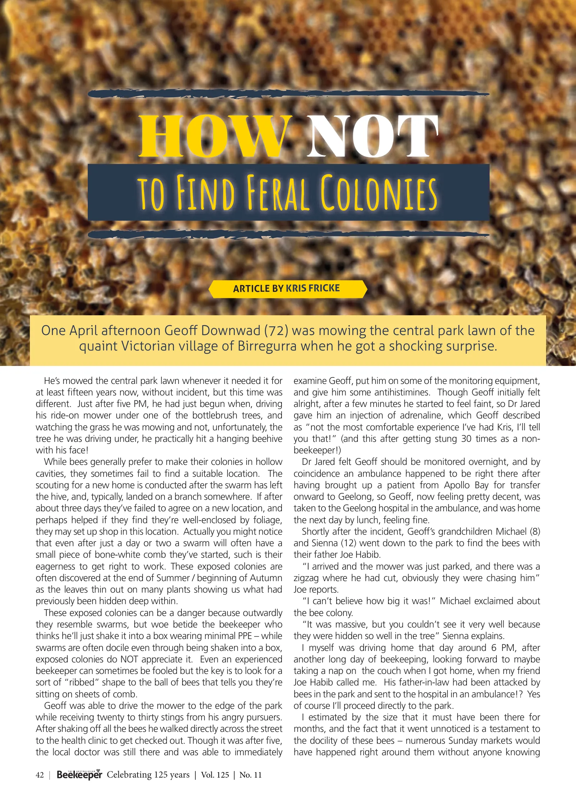

He’s mowed the central park lawn whenever it needed it for
at least fifteen years now, without incident, but this time was
different. Just after five PM, he had just begun when, driving
his ride-on mower under one of the bottlebrush trees, and
watching the grass he was mowing and not, unfortunately, the
tree he was driving under, he practically hit a hanging beehive
with his face!
While bees generally prefer to make their colonies in hollow
cavities, they sometimes fail to find a suitable location. The
scouting for a new home is conducted after the swarm has left
the hive, and, typically, landed on a branch somewhere. If after
about three days they’ve failed to agree on a new location, and
perhaps helped if they find they’re well-enclosed by foliage,
they may set up shop in this location. Actually you might notice
that even after just a day or two a swarm will often have a
small piece of bone-white comb they’ve started, such is their
eagerness to get right to work. These exposed colonies are
often discovered at the end of Summer / beginning of Autumn
as the leaves thin out on many plants showing us what had
previously been hidden deep within.
These exposed colonies can be a danger because outwardly
they resemble swarms, but woe betide the beekeeper who
thinks he’ll just shake it into a box wearing minimal PPE – while
swarms are often docile even through being shaken into a box,
exposed colonies do NOT appreciate it. Even an experienced
beekeeper can sometimes be fooled but the key is to look for a
sort of “ribbed” shape to the ball of bees that tells you they’re
sitting on sheets of comb.
Geoff was able to drive the mower to the edge of the park
while receiving twenty to thirty stings from his angry pursuers.
After shaking off all the bees he walked directly across the street
to the health clinic to get checked out. Though it was after five,
the local doctor was still there and was able to immediately
ARTICLE BY KRIS FRICKE
examine Geoff, put him on some of the monitoring equipment,
and give him some antihistimines. Though Geoff initially felt
alright, after a few minutes he started to feel faint, so Dr Jared
gave him an injection of adrenaline, which Geoff described
as “not the most comfortable experience I’ve had Kris, I’ll tell
you that!” (and this after getting stung 30 times as a non-
beekeeper!)
Dr Jared felt Geoff should be monitored overnight, and by
coincidence an ambulance happened to be right there after
having brought up a patient from Apollo Bay for transfer
onward to Geelong, so Geoff, now feeling pretty decent, was
taken to the Geelong hospital in the ambulance, and was home
the next day by lunch, feeling fine.
Shortly after the incident, Geoff’s grandchildren Michael (8)
and Sienna (12) went down to the park to find the bees with
their father Joe Habib.
“I arrived and the mower was just parked, and there was a
zigzag where he had cut, obviously they were chasing him”
Joe reports.
“I can’t believe how big it was!” Michael exclaimed about
the bee colony.
“It was massive, but you couldn’t see it very well because
they were hidden so well in the tree” Sienna explains.
I myself was driving home that day around 6 PM, after
another long day of beekeeping, looking forward to maybe
taking a nap on the couch when I got home, when my friend
Joe Habib called me. His father-in-law had been attacked by
bees in the park and sent to the hospital in an ambulance!? Yes
of course I’ll proceed directly to the park.
I estimated by the size that it must have been there for
months, and the fact that it went unnoticed is a testament to
the docility of these bees – numerous Sunday markets would
have happened right around them without anyone knowing
One April afternoon Geoff Downwad (72) was mowing the central park lawn of the
quaint Victorian village of Birregurra when he got a shocking surprise.
42 |
Celebrating 125 years | Vol. 125 | No. 11